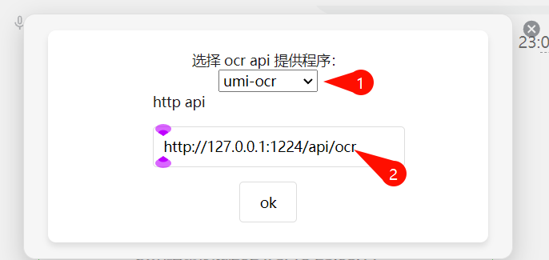

支持使用umi-ocr进行图片识别 v0.3.10
此次更新特别鸣谢
pisceswb
的支持。
现在 oceanpress 插件支持使用 umi-ocr 的 http api 进行图片识别了，依旧支持图片文本复制，适配思源图片ocr搜索功能。
使用方法
安装 oceanpress 插件以及
umi-ocr
,点击波浪图片修改 ocr 配置
然后在弹出来的面板中填写api地址即可使用

识别所有图片功能运行后请打开开发者面板查看进度